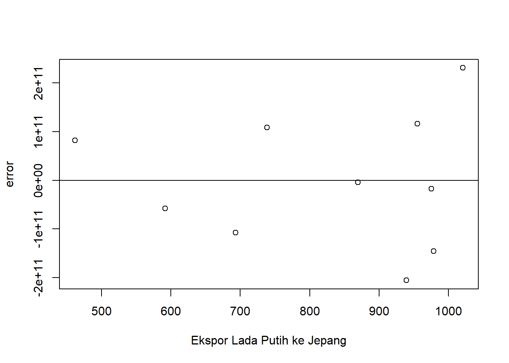

Pengaruh Ekspor Lada Putih ke Negara Jepang Terhadap PDB Indonesia tahun 2013-2022
Metode Penelitian Politeknik APP Jakarta
Author
Nisa Rahmasari
Published
January 20, 2024
1 Pendahuluan
1.1 Latar belakang
Ekspor merupakan salah satu pilar utama dalam perekonomian suatu negara, memainkan peran penting dalam pertumbuhan ekonomi dan pembangunan nasional. Dalam konteks Indonesia, sektor ekspor telah menjadi sumber pendapatan yang signifikan dan berkontribusi secara substansial terhadap Produk Domestik Bruto (PDB). Salah satu komoditas ekspor unggulan yang telah memberikan kontribusi positif bagi perekonomian Indonesia adalah lada putih.
Lada putih, sebagai salah satu rempah-rempah berkualitas tinggi, memiliki permintaan yang stabil di pasar internasional. Negara Jepang, sebagai salah satu mitra dagang utama Indonesia, telah menjadi tujuan utama ekspor lada putih Indonesia selama beberapa tahun terakhir. Peningkatan ekspor lada putih ke Jepang dapat memberikan dampak signifikan terhadap pertumbuhan ekonomi Indonesia, khususnya pada tingkat Produk Domestik Bruto (PDB).
Melalui periode tahun 2013 hingga 2022, dinamika ekspor lada putih ke Jepang dipengaruhi oleh berbagai faktor, termasuk perubahan kebijakan perdagangan internasional, fluktuasi nilai tukar, dan perubahan pola konsumsi di pasar Jepang. Oleh karena itu, penting untuk memahami dan menganalisis dampak ekspor lada putih ke Jepang terhadap PDB Indonesia selama periode tersebut.
Penelitian ini bertujuan untuk menyelidiki dan menganalisis pengaruh ekspor lada putih ke Negara Jepang terhadap pertumbuhan Produk Domestik Bruto Indonesia dalam rentang waktu tahun 2013 hingga 2022. Dengan pemahaman yang lebih mendalam terhadap keterkaitan antara ekspor lada putih dan PDB, penelitian ini diharapkan dapat memberikan kontribusi positif bagi perumusan kebijakan perdagangan luar negeri Indonesia serta pengembangan strategi ekonomi yang berkelanjutan.
1.2 Ruang lingkup
Ruang lingkup penelitian ini mencakup kajian mendalam terhadap dampak ekspor lada putih ke Negara Jepang terhadap pertumbuhan Produk Domestik Bruto (PDB) Indonesia selama periode tahun 2013 hingga 2022. Dalam memahami ruang lingkup penelitian ini, beberapa dimensi akan dijelaskan untuk memberikan gambaran komprehensif mengenai parameter dan variabel yang menjadi fokus analisis.
Dimana dalam pengambilan data ini mengambil 2 Variabel antara lain nilai ekspor Indonesia dan nilai Gross Domestic Product (GDP) Data yang digunakan adalah data yang bersifat time series yaitu dalam kurun waktu 2013-2022 dengan satuan USD untuk memudahkan penyetaraan mata uang secara internasional.
1.3 Rumusan masalah
Apakah ekspor komoditi lada putih ke Jepang dapat berpengaruh terhadap GDP Indonesia?
Bagaimana hubungan ekspor terhadap GDP Indonesia?
1.4 Tujuan dan manfaat penelitian
Tujuan dari penelitian ini adalah untuk menilai sejauh mana nilai ekspor lada putih ke Jepang memengaruhi GDP Indonesia selama periode 2013-2022. Selain itu, untuk menentukan apakah ada korelasi positif antara ekspor dan pertumbuhan ekonomi. Manfaat yang diharapkan dari hasil penelitian ini adalah Memberikan wawasan kepada pembaca tentang sejauh mana kebijakan ekspor dapat menjadi penyebab bagi pertumbuhan ekonomi Indonesia.
1.5 Package
Ini tidak wajib ada di tulisan anda tapi anda dapat menunjukkan Packages yang digunakan antara lain sebagai berikut:
library(tidyverse)
Warning: package 'tidyverse' was built under R version 4.3.2
Warning: package 'ggplot2' was built under R version 4.3.2
Warning: package 'tidyr' was built under R version 4.3.2
Warning: package 'readr' was built under R version 4.3.2
Warning: package 'purrr' was built under R version 4.3.2
Warning: package 'dplyr' was built under R version 4.3.2
Warning: package 'stringr' was built under R version 4.3.2
Warning: package 'forcats' was built under R version 4.3.2
Warning: package 'lubridate' was built under R version 4.3.2
── Attaching core tidyverse packages ──────────────────────── tidyverse 2.0.0 ──
✔ dplyr 1.1.4 ✔ readr 2.1.5
✔ forcats 1.0.0 ✔ stringr 1.5.1
✔ ggplot2 3.4.4 ✔ tibble 3.2.1
✔ lubridate 1.9.3 ✔ tidyr 1.3.0
✔ purrr 1.0.2
── Conflicts ────────────────────────────────────────── tidyverse_conflicts() ──
✖ dplyr::filter() masks stats::filter()
✖ dplyr::lag() masks stats::lag()
ℹ Use the conflicted package (<http://conflicted.r-lib.org/>) to force all conflicts to become errors
library(readxl)
Warning: package 'readxl' was built under R version 4.3.2
2 Studi pustaka
Perdagangan internasional adalah salah satu cara menghadapi perekonomian global dengan memanfaatkan kekayaan dari masing-masing negara (Rochmat et al., 2017).
Ekspor merupakan suatu komponen pengeluaran agregat, oleh sebab itu ekspor dapat mempengaruhi pendapatan nasional yang akan dicapai. Apabila ekspor bertambah, pengeluaran agregat bertambah tinggi dan selanjutnya akan menaikkan pendapatan nasional, akan tetapi sebaliknya pendapatan nasional tidak dapat mempengaruhi ekspor, ekspor belum tentu dapat mengalami perubahan walaupun pendapatan nasional tetap (Affandi,2018)
3 Metode penelitian
3.1 Data
Berikut adalah data yang digunakan sebagai penelitian, data dibawah ini merupakan data ekspor lada putih ke Jepang, dan PDB Indonesia dengan satuan USD.
Tahun
Ekspor Lada Putih
PDB
2013
592,025
9,12524E+11
2014
693,47
8,90815E+11
2015
939,3924
8,60854E+11
2016
978,7988
9,31877E+11
2017
461,9
1,01562E+12
2018
869,5
1,04227E+12
2019
738,4
1,1191E+12
2020
975,3
1,05905E+12
2021
955,1
1,18651E+12
2022
1020,5
1,3191E+12
penelitian ini menggunakan data sekunder dengan bentuk time series 2013-2022, data yang dipakai diolah dan bersumber dari Badan Pusat Statistik.
setwd('C:/Metopel')dat<-read_excel('UAS.xlsx')library(readxl)reg1<-lm(y~x,data=dat)dat$u<-resid(reg1)plot(dat$x,dat$u,xlab="Ekspor Lada Putih ke Jepang",ylab="error")abline(h=0)

Plot pengaruh Error terhadap Ekspor Lada Putih ke Jepang
Metode yang dipilih adalah regresi univariat atau Ordinary Least Square (OLS) dengan 1 variabel independen. Penelitian ini bermaksud mencari hubungan antara Ekspor lada putih ke Jepang dan PDB. Spesifikasi yang dilakukan adalah:
\[
y_{t}=\beta_0 + \beta_1 x_t+\mu_t
\] di mana \(y_t\) adalah PDB dan \(x_t\) adalah Ekspor Lada Putih ke Jepang.
4 Pembahasan
4.1 Pembahasan masalah
Variabel
Coefficient
Std. Error
t value
Prob (.)
Intercept
8.060e+11
2.104e+11
3.832
0.005
X
2.769e+08
2.498e+08
1.109
0.300
R Squared
0.1331
Adjusted R-squared
0.02479
F-statistic
1.229
Prob(F-statistic)
0.2999
Hasil regresi yang telah didapat dimasukan ke dalam rumus persamaan yang ada sehingga menjadi: \[
Y= 8.060+2.769X
\] Peran dari ekspor lada putih ke Jepang dalam pertumbuhan ekonomi berperan penting dalam meningkatkan PDB dikarenakan nilai variabel X yang menunjukkan positif, meskipun demikian, hasil regresi ini menunjukkan bahwa pengaruh nilai ekspor lada putih ke Jepang tidak sepenuhnya mempengaruhi GDP di indonesia.ada beberapa faktor lain yang menyebabkan peningkatan PDB Indonesia. dapat diasumsikan bahwa setiap kenaikan ekspor 1, maka GDP akan meningkat sebesar 2.769.
Nilai Adjusted R-squared sebesar 0.02479 menunjukan bahwa variabel independen di dalam penelitian dapat menjelaskan variasi variabel dependen sebesar 2,479 persen. F-statistic dengan nilai 1.229 menjelaskan bahwa variabel independen dalam jangka panjang seperti ekspor lada putih memiliki pengaruh signifikan terhadap pertumbuhan ekonomi atau GDP Indonesia.
Call:
lm(formula = y ~ x, data = dat)
Residuals:
Min 1Q Median 3Q Max
-2.053e+11 -9.480e+10 -1.079e+10 1.019e+11 2.305e+11
Coefficients:
Estimate Std. Error t value Pr(>|t|)
(Intercept) 8.060e+11 2.104e+11 3.832 0.005 **
x 2.769e+08 2.498e+08 1.109 0.300
---
Signif. codes: 0 '***' 0.001 '**' 0.01 '*' 0.05 '.' 0.1 ' ' 1
Residual standard error: 1.429e+11 on 8 degrees of freedom
Multiple R-squared: 0.1331, Adjusted R-squared: 0.02479
F-statistic: 1.229 on 1 and 8 DF, p-value: 0.2999
dilihat dari tabel di atas menujukan ketika kenaikan ekspor lada putih ke Jepang dengan diasumsikan 1 nilainya, maka dapat meningkatkan PDB sebesar 2.769.
5 Kesimpulan
Setelah dilakukannya penelitian melalui regresi dapat disimpulkan antara lain:
Penelitian ini membahas dampak ekspor lada putih ke Negara Jepang terhadap Produk Domestik Bruto (PDB) Indonesia dalam periode 2013-2022. Hasil analisis regresi menunjukkan bahwa ekspor lada putih memegang peran penting dalam meningkatkan pertumbuhan ekonomi namun tidak sepenuhnya mempengaruhi, sebagaimana ditunjukkan oleh nilai variabel X yang menunjukkan korelasi positif.
Meskipun demikian, hasil regresi juga mengungkapkan bahwa pengaruh ekspor lada putih terhadap PDB Indonesia tidak bersifat eksklusif. Terdapat faktor-faktor lain yang turut menyumbang terhadap peningkatan PDB Indonesia, dan pengaruh variabel ekspor lada putih tidak sepenuhnya mempengaruhi GDP.
Dalam konteks ini, dapat diasumsikan bahwa setiap kenaikan satu unit ekspor lada putih mengakibatkan peningkatan sebesar 2.769 pada GDP Indonesia. Meskipun angka ini memberikan gambaran kontribusi positif, kesimpulan perlu diambil dengan berhati-hati, mengingat nilai Adjusted R-squared sebesar 0.02479. Angka ini menunjukkan bahwa variasi dalam PDB Indonesia hanya dapat dijelaskan sekitar 2,479 persen oleh variabel independen, yaitu ekspor lada putih ke Jepang.
Meski demikian, nilai F-statistic sebesar 1.229 menegaskan bahwa variabel independen, yakni ekspor lada putih, memiliki pengaruh signifikan dalam jangka panjang terhadap pertumbuhan ekonomi atau GDP Indonesia. Oleh karena itu, sementara ekspor lada putih ke Jepang memberikan kontribusi positif yang signifikan, penelitian lebih lanjut diperlukan untuk memahami dengan lebih mendalam faktor-faktor lain yang turut berperan dalam dinamika pertumbuhan ekonomi Indonesia selama periode penelitian.
6 Referensi
Affandi, Zulham, T., & Gunawan, E. (2018). Pengaruh Ekspor, Impor Dan Jumlah Penduduk. Jurnal Perspektif Ekonomi Darussalam, 4(2), 249–264. https://doi.org/https://doi.org/10.24815/jped.v4i2.13021
Trilarasati, L. S., Khafiya, N. N., Adriananta, M., Fitriana, A. N., & Velma, M. G. (2023). Komparasi Daya Saing Ekspor Lada Indonesia Terhadap. Jurnal Economina, 2(1), 231–240.
Wardani, V. A. T., & Sunyigono, A. K. (2002). DAYA SAING DAN FAKTOR YANG MEMPENGARUHI EKSPOR LADA INDONESIA KE INDIA. Jurnal Ekonomi Pertanian Dan Agribisnis (JEPA).